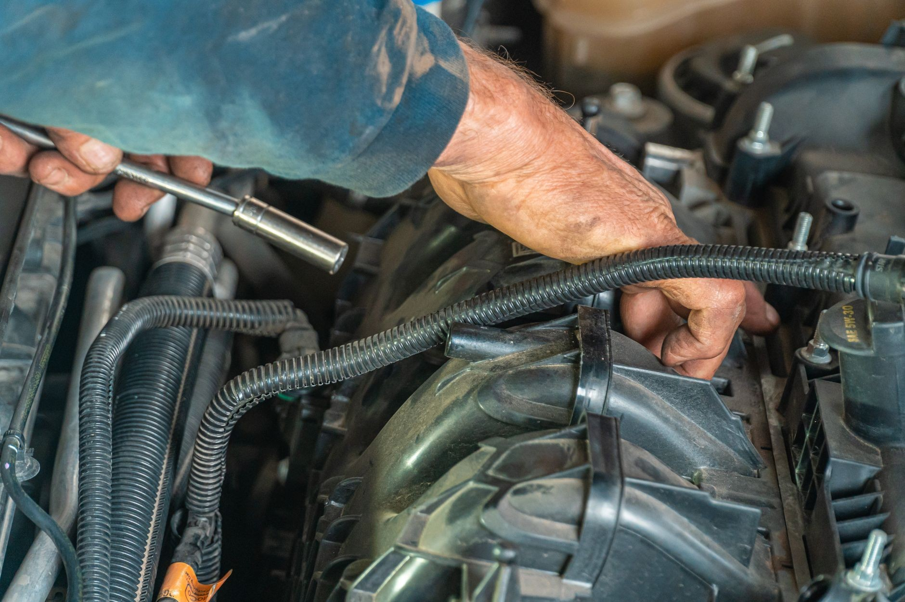
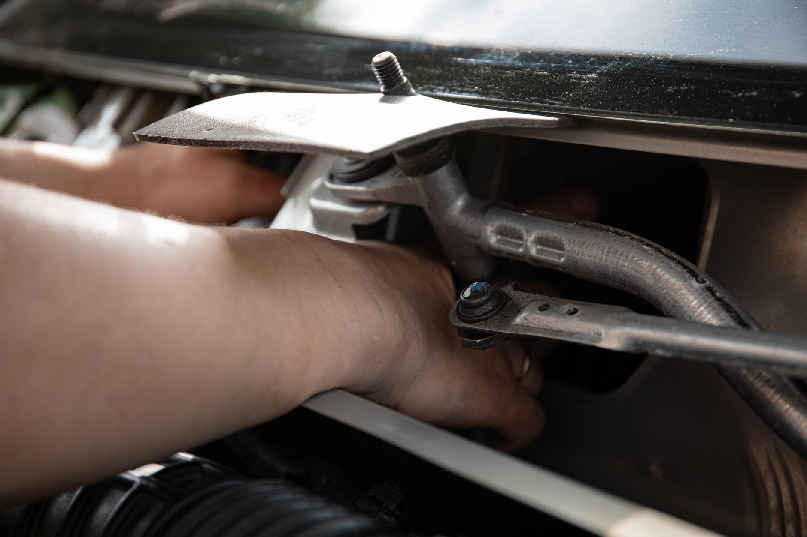
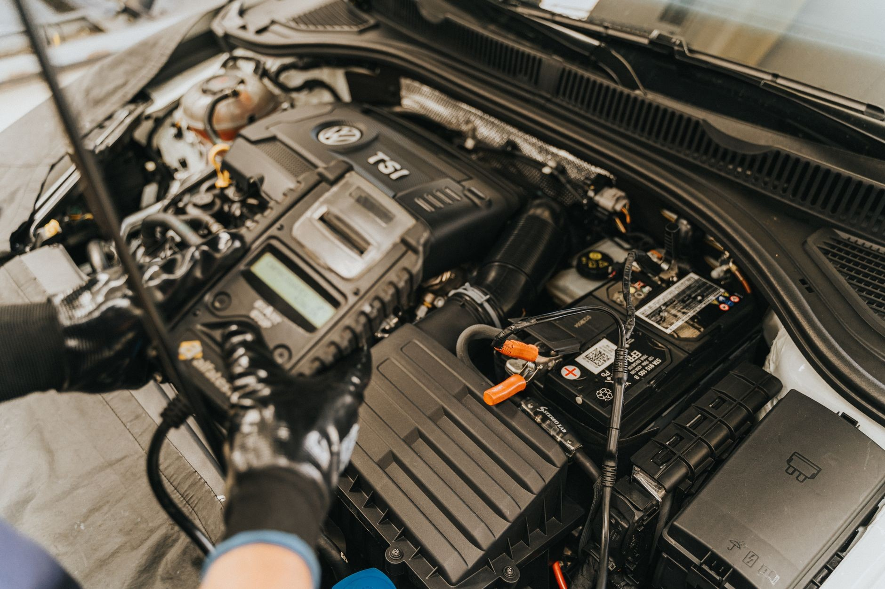
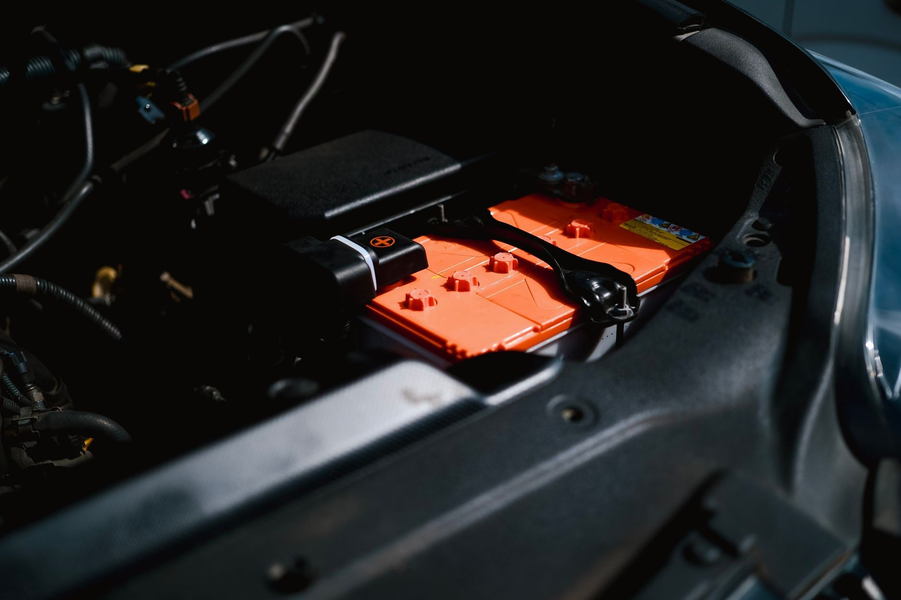
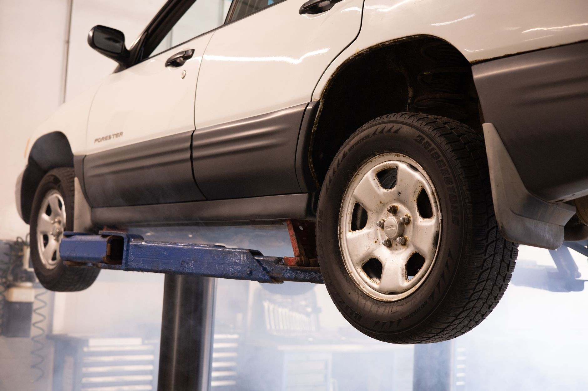

Prosty, przewidywalny proces. Wiesz, co i za ile - bez niespodzianek.
Zadzwoń lub napisz - dobierzemy dogodną datę.
Oglądamy auto, doradzamy zakres i podajemy jasną cenę.
Pracujemy dokładnie, na sprawdzonych produktach i sprzęcie.
Sprawdzamy efekt razem z Tobą i oddajemy auto gotowe do drogi.
Diagnostyka, elektryka, mechanika i opony - tak wygląda praca przy autach od kuchni.





Polecam z całego serca. Pan Norbert to bardzo kompetentny, znający się na swoim fachu mechanik. Rzetelny, uczciwy, a przy tym przesympatyczny, miły człowiek. Najlepszy warsztat, w jakim miałam przyjemność serwisować auto.Anetta Uptas
Zdecydowanie polecam! Trafiłem do tego warsztatu z Hyundaiem ix35 na wymianę sprzęgła, zawieszenia oraz opon. Robota wykonana bardzo dokładnie i czysto.Daniel Paczkowski
Polecam tego mechanika, zna się na temacie. Nie odejdzie od auta, dopóki nie rozwiąże problemu. U mnie egzamin zdany na 6.Adam gks 1977
Zadzwoń lub napisz - obejrzymy auto, doradzimy zakres i podamy jasną cenę. Bez zobowiązań.